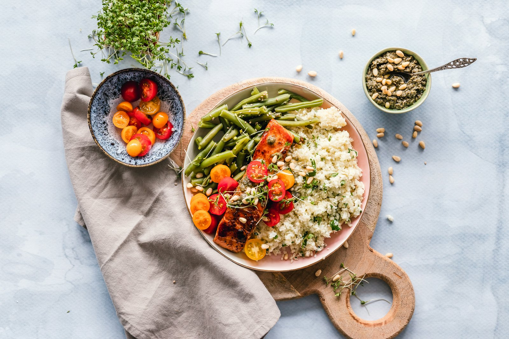

Especialidad
Ortodoncia y Odontopediatría
Sonrisas alineadas en todas las edades.
El servicio
Ortodoncia y Odontopediatría
La ortodoncia corrige la posición de los dientes y la mordida en niños, adolescentes y adultos. Trabajamos con brackets y alineadores, con planes adaptados a cada edad.
Pedir turnoEn qué consiste
Cómo lo trabajamos.
Un abordaje claro, explicado en cada paso, para que tomes decisiones con información.
Ortodoncia en niños y adultos
Desde la dentición en crecimiento hasta la adulta: evaluamos la mejor opción para cada caso.
Brackets y alineadores
Opciones convencionales y estéticas, con seguimiento periódico para acompañar cada etapa.
Odontopediatría preventiva
Controles, hábitos y tratamientos preventivos para las sonrisas más chicas.
Atención adaptada a cada edad
Explicamos cada paso con claridad y cuidamos la experiencia del paciente en cada visita.
Beneficios
Qué podés esperar.
Plan personalizado para cada edad
Opciones estéticas y convencionales
Seguimiento periódico del tratamiento
Atención cálida y didáctica
Presupuesto detallado previo
Proceso
Paso a paso.
Evaluación y registros iniciales
Plan de tratamiento y opciones
Colocación y seguimiento periódico
También te puede interesar
Servicios relacionados.
Turnos
¿Listo para cuidar tu sonrisa? Empezá con tu diagnóstico.
Completá el formulario y te confirmamos por WhatsApp o teléfono.
(0351) 422 7901